Solved Examples and Applications of Scatter Diagrams
Technology: Pearson Statcrunch software
For ACT Students
The ACT is a timed exam...60 questions for 60 minutes
This implies that you have to solve each question in one minute.
Some questions will typically take less than a minute a solve.
Some questions will typically take more than a minute to solve.
The goal is to maximize your time. You use the time saved on those questions you
solved in less than a minute, to solve the questions that will take more than a minute.
So, you should try to solve each question correctly and timely.
So, it is not just solving a question correctly, but solving it correctly on time.
Please ensure you attempt all ACT questions.
There is no negative penalty for any wrong answer.
For WASSCE Students
Any question labeled WASCCE is a question for the WASCCE General Mathematics
Any question labeled WASSCE-FM is a question for the WASSCE Further Mathematics/Elective Mathematics
For NSC Students For the Questions:
Any space included in a number indicates a comma used to separate digits...separating multiples of three
digits from behind.
Any comma included in a number indicates a decimal point. For the Solutions:
Decimals are used appropriately rather than commas
Commas are used to separate digits appropriately.
Solve all questions.
Show all work.
Please Note:
(1.) For applicable questions, if the level of significance is not given, use 5%
(2.) Unless otherwise specified, do not round intermediate calculations.
However, if you must round intermediate calculations because of long decimal digits; then round those
intermediate calculations to
at least three (three or more) decimal places more than the number of decimal places to round the final
answer.
For example: if the question asks you to round the final answer to three decimal places but did not specify
how you should round
intermediate calculations; then round the intermediate calculations to at least six decimal places.
(3.) There are at least two formulas for calculating the Pearson's correlation coefficient.
For some questions, I shall use the First Formula.
For other questions, I shall use the Second Formula.
If you wish to see examples of how both formulas are used, please review all questions that asked for the
determination of the
correlation coefficient (or Pearson's correlation coefficient).
(1.) For each scatterplot defined below:
(a.) Would it make sense to find the correlation using the data set?
(b.) Give reason(s).
(A.)
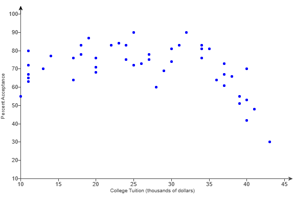
(B.)
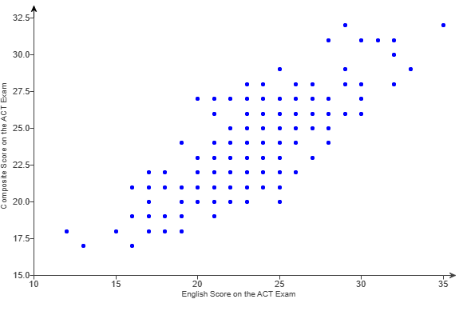
(C.)
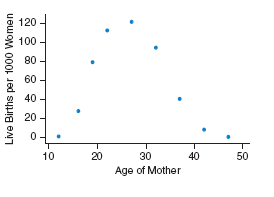
(1A). Determing the linear correlation using that data would not make
sense because the trend is not linear.
It is quadratic.
(1B.) Determing the linear correlation using that data would make
sense because the trend is linear.
(1C). Determing the linear correlation using that data would not make
sense because the trend is not linear.
It is quadratic.
(2.) HSC Mathematics Standard 2 For a set of bivariate data, Pearson's correlation coefficient is
$-1$
Which graph could best represent this set of bivariate data?
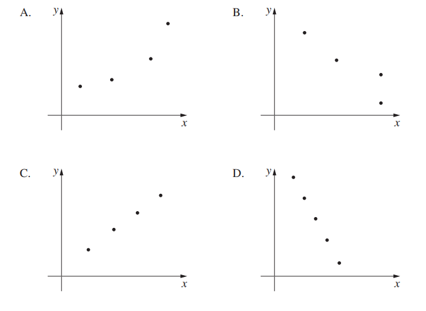
The graph that:
(a.) has a straight-line that joins all the points perfectly and
(b.) has a negative slope
is
Option D
(3.) Match the linear correlation coefficient to the scatter diagram.
The scales on the x-axis and y-axis are the same for each scatter diagram.
(a.) r = −0.049
(b.) r = −1
(c.) r = −0.969
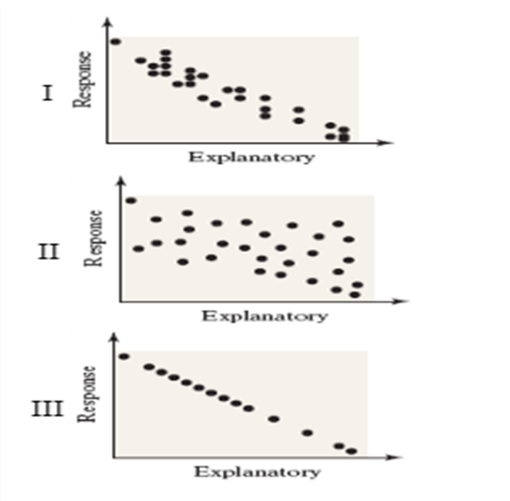
The value of the correlation coefficient is between −1 and 1
A negative correlation implies that the Pearson correlation coefficient is negative (less than 0)
A perfect negative correlation has a negative correlation coefficient value of -1
A strong negative correlation has a negative correlation coefficient value very close to -1
A weak negative correlation has a negative correlation coefficient value close to 0
This implies that:
(a.) $r = -0.049 \implies$ Scatter Diagram II
(b.) $r = -1 \implies$ Scatter Diagram III
(c.) $r = -0.969 \implies$ Scatter Diagram I
(4.) ACT Jayla plotted the data from her science project as a scatterplot in the standard
$(x, y)$ coordinate plane.
She found the line containing $2$ of the points to be $y = 0.28x + 6$.
The scatterplot and the line are shown below.
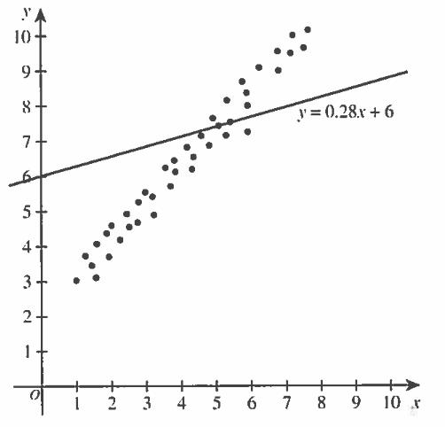
Jayla decided that this line was not a good fit for her data.
To transform her line into the regression line for her data, Jayla must:
A. increase both the slope and the y-intercept.
B. increase the slope and decrease the y-intercept.
C. decrease both the slope and the y-intercept.
D. decrease the slope and the increase the y-intercept.
E. use either a horizontal or vertical line.
Line in Slope-Intercept Form
The slope of the line is $0.28$
The y-intercept of the line is $6$
Regression Line
*The y-intercept of the regression line seems to be $2$.*
In that regard, it is important to note that the y-intercept of the line in slope-intercept form
must be decreased.
This eliminates Options $A$ and $D$.
Option $E$ is also incorrect because the regression line is not a horizontal line or a vertical
line.
Using a horizontal or vertical line is not a good fit for the regression line.
Let us analyze the remaining options:
Option $B:$ increase the slope and decrease the y-intercept.
The regression is steeper than the slope-intercept line
This implies that it has a greater slope than the slope-intercept line
Student: How? May you explain? Teacher: Remember we discussed steepness in Relations and Functions topic in PreCalculus
I
We can also look at an example to prove what I said.
Let us find the slope of the regression line ...not by formula...but by picking any two points
in that
regression line Student: Point $1$ = $(1, 3)$ and Point $2$ = $(7, 10)$ Teacher Okay. Find the slope Student:
Because the regression line is steeper than the slope-intercept line, it has a higher slope.
Therefore, Jayla needs to increase the slope of her slope-intercept line in order for the line to
fit her regression line.
Option $B$ is correct.
Option $C$ is incorrect because decreasing the slope of the slope-intercept line would cause it to
be less steep. It would not fit the regression line.
(5.) ACT A certain fraternity had its freshmen members keep a log
of their hours speD! playing video gimes.
When midterm grades were known. the fraternity president
plotted the data in the standard (x,y) coordinate plane
with average hours per week spent playing video games
on the x-axis and the midterm grade point average
(GPA) on the y-axis as shown in the figure below.
He then performed a linear regression on the data.
Which of the following statements is true of the regression equation?
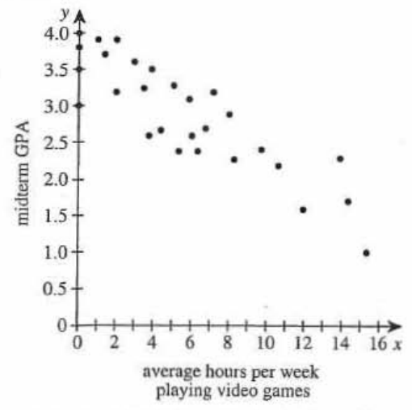
A. The slope and the y-intercept are both negative. B. The slope and the y-intercept are both positive. C. The slope is negative, and the y-intercept is positive. D. The slope is positive, and the y-intercept is negative. E. The slope is 0, and the y-intercept is positive.
The y-intercept is the point where the graph cuts the y-axis.
Based on the graph:
The slope is negative and the y-intercept is positive.
(6.) For each scatterplot defined below:
(a.) Does it appear that the correlation coefficient among these variables is positive, negative, or
near zero?
(b.) Give reason(s).
(A.)
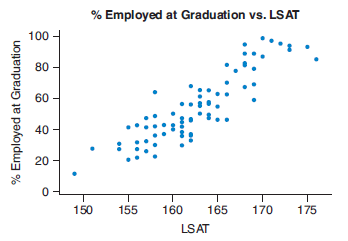
(B.)
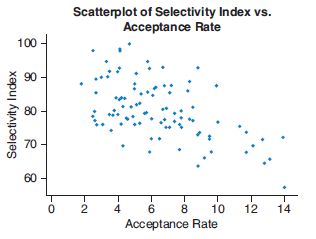
(6A.) The correlation coefficient is positive because the graph shows
an increasing trend.
(6B.) The correlation coefficient is negative because the graph shows
a decreasing trend.
(7.) The scatterplot of the heights and weights of some women taking statistics.
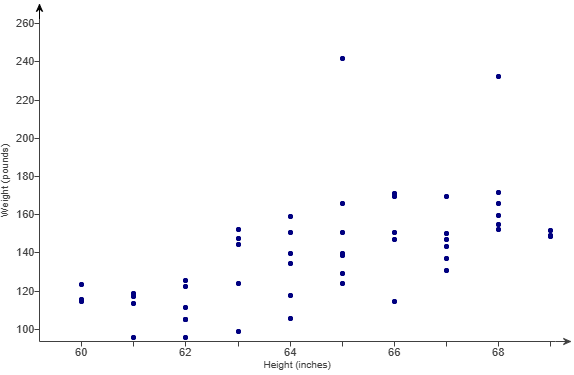
Comment on the trend.
The graph show an increasing trend.
This implies that taller women tend to weigh more.
(8.) The scatterplots show SAT (Scholastic Aptitude Test) scores and GPA
(Grade Point Average) in college for a sample of students.
The top graph uses the SAT critical reading score to predict GPA in college.
The bottom graph shows the SAT math score to predict GPA.
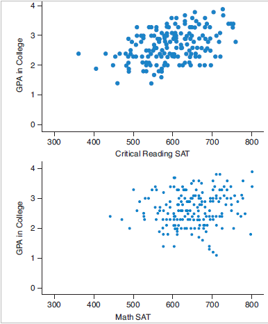
(a.) Which is the better predictor of GPA for these students: Critical Reading SAT or Math SAT?
(b.) Explain your answer.
The Critical Reading SAT is a better predictor of GPA because the vertical spread
of GPA for that graph is narrower.
This implies that the Critical Reading SAT scores have the stronger
association with GPA in college.
(9.) Match the linear correlation coefficient to the scatter diagram.
(a.) r = −0.980
(b.) r = 0.767
(c.) r = 0.299
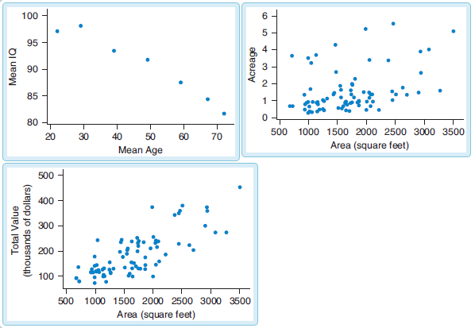
(a.) r = −0.980 matches the scatter diagram of the Mean IQ and Mean Age
(b.) r = 0.767 matches the scatter diagram of the Total Value (thousands of dollars) and Area
(square feet)
(c.) r = 0.299 matches the scatter diagram of the Acreage and Area (square feet)
(10.) The scatterplot shows the data on age, denoted A, of a sample of students and the number of
college credits, C, attained.
Comment on the strength, direction, and shape of the trend.
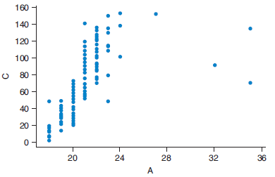
The trend is linear, positive, and strong until around age 24, when the trend becomes negative and
weak.
For points at or below the age of 24 (many students), the trend closely follows the shape of a line
that increases from left to right; so the trend is linear, positive, and strong.
After age 24 (very few students), the points representing older students do not follow the pattern
of this line, and is generally negative and weak.
(11.) The scatterplot shows the price and area for some houses.
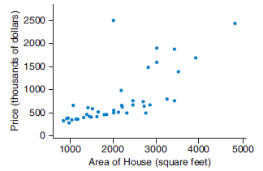
(a.) Comment on the trend.
(b.) Identify the potential outliers.
(a.) The trend appears to be positive because the area of the house has a moderate positive curved
association with the price in the sample of houses.
The scatterplot shows that as the area of the house increases, the selling price tends to increase
at an increasing rate.
Hence, the trend is positive but has some curvature.
(b.) There are two potential outliers based on the scatterplot: the 2000-square-foot house with a
price of about $2500 thousand and the 5000-square-foot house with
a price of about $2400 thousand.
(12.)
(13.) Match the linear correlation coefficient to the scatter diagram.
(a.) r = 0.777
(b.) r = −0.903
(c.) r = 0.374
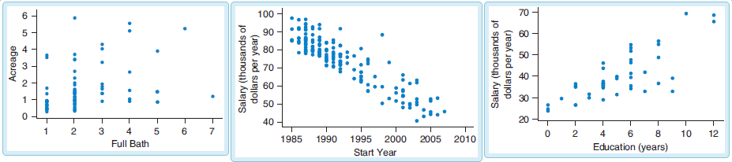
(a.) r = 0.777 matches the scatter diagram of the Salary (thousands of dollars per year) and
Education (years)
(b.) r = −0.903 matches the scatter diagram of the Salary (thousands of dollars per
year) and Start Year
(c.) r = 0.374 matches the scatter diagram of the Acreage and Full Bath
(14.) For the scatterplots:
The first graph shows the years a person was employed before working at the company and the salary at
the company.
The second graph shows the years employed at the company and the salary.
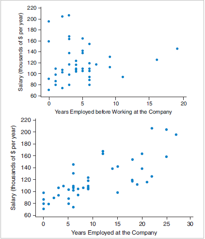
(a.) Which graph shows a stronger relationship and could do a better job predicting salary at the
company?
(b.) Give reason(s).
The years employed at the company shows a stronger relationship
because the vertical spread of salary is narrower.
Hence, years employed at the company shows a stronger relationship
and is a better predictor of salary.
(15.) The scatterplot shows the number of hours of work per week and the number of hours of sleep per
night for some college students.
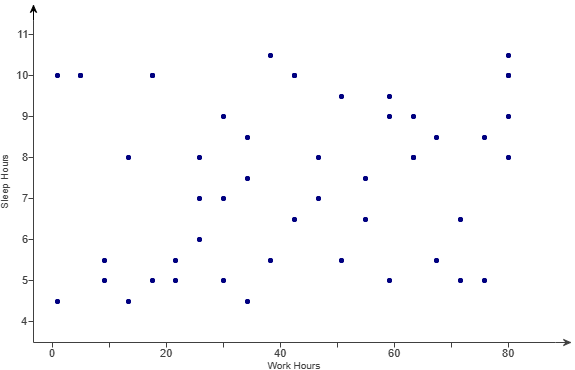
Comment on the trend.
The graph does not show any significant trend. It shows very little trend.
The number of hours of work does not seem to be related to the number of hours of sleep for these
students.
(16.)
(17.) Match the linear correlation coefficient to the scatter diagram.
(a.) r = 0.66
(b.) r = −0.94
(c.) r = 0.03
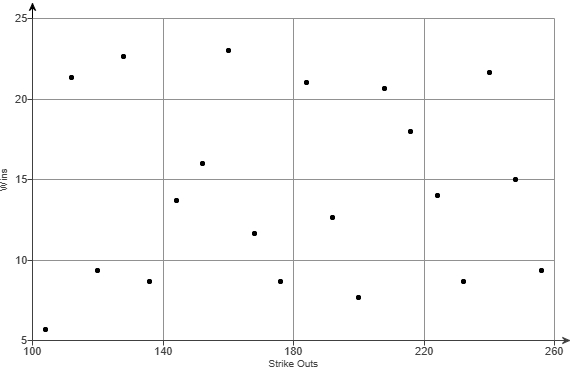
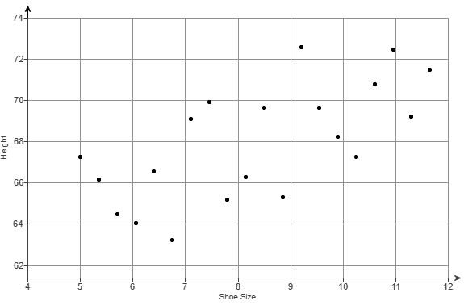
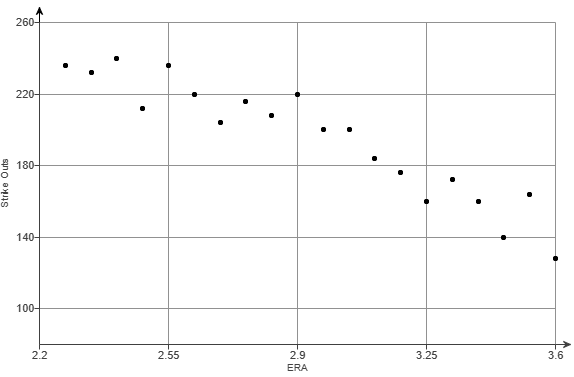
(a.) r = 0.66 matches the scatter diagram of the Wins and Strike Outs
(b.) r = −0.94 matches the scatter diagram of the Height and Shoe Size
(c.) r = 0.03 matches the scatter diagram of the Strike Outs and ERA
(18.) The scatterplot shows the numbers of brothers and sisters for a large number of students.
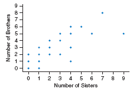
(a.) Comment on the trend.
(b.) Does the direction make sense in this context?
(a.) The trend is positive. Students with more sisters tended to have more brothers.
(b.) Since it is equally likely for a child to be a boy or a girl (probability of having a boy is
the same as the probability of having a girl), this trend makes sense
because large families are likely to have a large number of sons and a large number of daughters.
(23.) Match the linear correlation coefficient to the scatter diagram.
(a.) r = 0.18
(b.) r = −0.51
(c.) r = 0.98
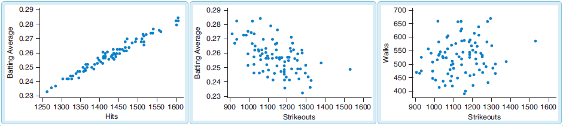
(a.) r = 0.18 matches the scatter diagram of the Walks and Strikeouts
(b.) r = −0.51 matches the scatter diagram of the Batting Average and Strikeouts
(c.) r = 0.98 matches the scatter diagram of the Batting Average and Hits
(24.) The scatter diagram shows the data on age and GPA for a sample of college students.
Comment on the trend of the scatter diagram.
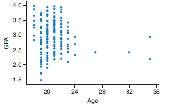
The graph does not show any discernible trend because the points show no pattern as the age
increases.
The scatterplot does not show a linear or curved pattern for the data.
Hence, there is no discernible trend.
The association between age and GPA is near zero.
(25.)
(26.) The scatter diagram shows the data on credits and GPA for a sample of college students.
Comment on the trend of the scatter diagram.
The trend appears to be near zero because the number of credits acquired are not associated with GPA
for the sample of college students.
The scatterplot shows that for any given number of college credits attained, the range in the GPA is
approximately the same for almost any other number of credits attained.
Hence, the trend appears to be near zero, and college credits are not associated with GPA.
(27.)
(28.)
(29.)
(30.)
(31.)
(32.) The scatter diagram shows the data on on salary and years of education for a sample of employees.
Comment on the trend of the scatter diagram.
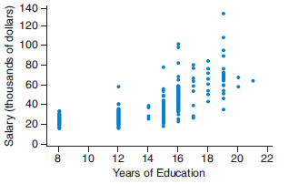
The trend appears to be positive because the number of years of education has a moderate positive
curved association with the salary for the sample of employees.
The scatterplot shows that as years of education increases, the salary also increases at an
increasing rate and then decreasing rate.
Hence, the trend is positive but shows some curvature.
(33.)
(34.)
(35.)
(36.)
(37.)
(38.) The scatterplot shows the number of work hours and the number of TV hours per week for some
college students who work.
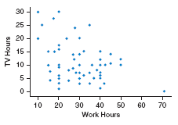
(a.) Comment on the trend.
(b.) Identify any unusual point(s).
(a.) The trend in this graph is negative because the amount of time a student spends working reduces
the amount of time they have to watch TV.
The more hours of work a student has, the fewer hours of TV the student tends to watch.
(b.) The person who works 70 hours appears to be an outlier, because that point is separated from
the other points by a large amount.
(39.)
(40.) The scatterplot shows the age and number of hours of sleep last night for some students.
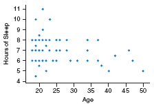
Comment on the trend.
The trend is slightly negative. Older adults tend to sleep a bit less than younger adults.
The trend in this graph is slightly negative because as the age increases the number of hours of
sleep tends to decrease.
The result is that older adults tend to sleep a bit less than younger adults.